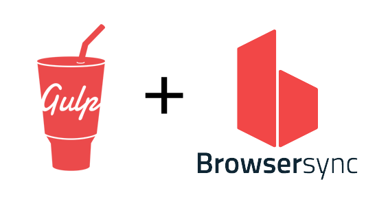

Gulp SASS + Browser-Sync Automation

Original:
30KB

Compressed:
10KB
Installation:
| Command | Description |
|---|---|
npm install |
Installing all node modules for this project to work |
gulp sass |
Compile multiple SASS files and combine them into a single CSS |
gulp css |
Minify all CSS files and refreshing webpage to see new styles |
gulp js |
Compile, Minify and combine many JS files into a single file |
gulp img |
Compress all PNG images |
gulp libs |
Move all vendor library files into "dist" production folder |
gulp clean |
Clean your "dist" production directory |
gulp build |
Build "dist" production directory consists of all development assets |
gulp watch / gulp |
Constantly watching for any file changes, compiling, and refreshing the page |
npm start |
Alternative way for npm watch command (essentially same thing) |